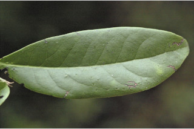
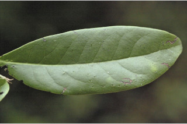

Trees up to 12 m tall.
12 ಮೀ. ಎತ್ತರದವರೆಗೆ ಬೆಳೆಯುವ ಮರಗಳು.
12 മീറ്റര് വരെ ഉയരത്തില് വളരുന്ന മരങ്ങള്.
மரம், 12 மீ. உயரம் வரை வளரக்கூடியது
Young branches terete, sparse adpressed hairy.
ಎಳೆಯ ಕಿರುಕೊಂಬೆಗಳು ದುಂಡಾಗಿದ್ದು ವಿರಳವಾಗಿ ಅಪ್ಪು-ರೋಮಗಳಿಂದ ಕೂಡಿರುತ್ತವೆ.
നേര്ത്ത രീതിയില്, ഒതുങ്ങിയ രോമങ്ങളുളള, ഇളംശാഖകള് ഉരുണ്ടതാണ്.
சிறிய நுனிக்கிளைகள் வளையமானது, சிறிதளவு உரோமங்களுடையது.
Leaves simple, alternate, distichous; petiole 0.5-1.0 cm long, canaliculate, glabrous; lamina 5-13 x 1.5-5 cm, usually narrow obovate, apex obtuse to rounded, base acute to cuneate, margin entire, coriaceous, glabrous, midrib canaliculate above; stout beneath; secondary_nerves 6-9 pairs; tertiary_nerves broadly reticulate.
ಎಲೆಗಳು ಸರಳವಾಗಿದ್ದು ಪರ್ಯಾಯ ಹಾಗೂ ಸುತ್ತು ಜೋಡನಾ ವ್ಯವಸ್ಥೆ ಯಲ್ಲಿದ್ದು ಕಾಂಡದ ಎರಡೂ ಕಡೆಯ ಎದುರು ಬದರಿನ ಸಾಲಿನಲ್ಲಿರುತ್ತವೆ; ಎಲೆ ತೊಟ್ಟುಗಳು 0.5 -1.0 ಸೆಂಮೀ.ಉದ್ದವಿದ್ದು, ಕಾಲುವೆ ಗೆರೆ ಸಮೇತವಾಗಿದ್ದು, ರೋಮರಹಿತವಾಗಿರುತ್ತವೆ; ಪತ್ರಗಳು 5 – 13 X 1.5 – 5 ಸೆಂ.ಮೀ. ಗಾತ್ರ, ಸಾಮಾನ್ಯವಾಗಿ ಬುಗುರಿಯ ಆಕಾರ ಹೊಂದಿದ್ದು, ಚೂಪಲ್ಲದುದರಿಂದ ಹಿಡಿದು ದುಂಡಾದ ತುದಿ, ಚೂಪಾದುದರಿಂದ ಬೆಣೆಯಾಕಾರದ ಬುಡ, ನಯವಾದ ಅಂಚು, ತೊಗಲವನ್ನೋಲುವ ಮೇಲ್ಮೈ ಹೊಂದಿದ್ದು, ರೋಮರಹಿತವಾಗಿರುತ್ತವೆ; ಮಧ್ಯನಾಳ ಪತ್ರದ ಮೇಲ್ಭಾಗದಲ್ಲಿ ಕಾಲುವೆಗೆರೆ ಸಮೇತವಾಗಿರುತ್ತದೆ ಹಾಗೂ ತಳಭಾಗದಲ್ಲಿ ದೃಢವಾಗಿರುತ್ತದೆ; ಎರಡನೇ ದರ್ಜೆಯ ನಾಳಗಳು 6 - 9 ಜೋಡಿಗಳಿರುತ್ತವೆ; ಮೂರನೇ ದರ್ಜೆಯ ನಾಳಗಳು ವಿಶಾಲವಾದ ಜಾಲ ಬಂಧ ನಾಳ ವಿನ್ಯಾಸದಲ್ಲಿರುತ್ತವೆ.
ലഘുവായ ഇലകള്, ഏകാന്തരമായി, തണ്ടിന്റെ രണ്ടുഭാഗത്തുമാത്രമായടുക്കിയ വിധത്തിലാണ്; അരോമിലവും ചാലോട്കൂടിയതുമായ ഇലഞെട്ടിന് 0.5 സെ.മീ മുതല് 1 സെ.മീ വരെ നീളം; പത്രഫലകത്തിന് 5 സെ.മീ മുതല് 13 സെ.മീ വരെ നീളവും 1.5 സെ.മീ മുതല് 5 സെ.മീ വരെ വീതിയും, സാധാരണയായി വീതികുറഞ്ഞ, അണ്ഡാകാരവുമാണ്, പത്രാഗ്രം ഉപകോണാകാരംതൊട്ട് വൃത്താകാരംവരെയാണ്, പത്രാധാരം നിശിതം തൊട്ട് ആപ്പാകാരം വരെയാകാം, അരികുകള് അവിഭജിതമാണ്, ചര്മ്മില പ്രകൃതം, അരോമിലമാണ്; മുഖ്യസിര മുകളില് ചാലോട്കൂടിയതാണ്, കീഴെ ദൃഢമാണ്; 6 മുതല് 9 വരെ ജോഡി ദ്വിതീയ ഞരമ്പുകള്; വീതിയേറിയ ജാലികതീര്ക്കുന്ന ത്രിതീയ ഞരമ്പുകള്.
இலைகள் தனித்தவை, மாற்றுஅடுக்கமானவை, இருநெடுக்கு வரிசையிலையடுக்கம் (டைஸ்டிக்கஸ்); இலைக்காம்பு 0.5-1 செ.மீ. நீளமானது, குறுக்குவெட்டுத் தோற்றத்தில் கேனாலிகுலேட், உரோமங்களற்றது; இலை அலகு 5-13 X 1.5-5 செ.மீ., பொதுவாக குறுகிய தலைகீழ் முட்டை வடிவம், அலகின் நுனி மழுங்கியது முதல் வட்டமானது, அலகின் தளம் கூரியது முதல் ஆப்பு வடிவமுடையது, அலகின் விளிம்பு முழுமையானது, கோரியேசியஸ், உரோமங்களற்றது, அலகின் மேற்பரப்பில் மையநரம்பு பள்ளமானது, தளப்பகுதி பருத்தது; இரண்டாம் நிலை நரம்புகள் 6-9 ஜோடிகள்; மூன்றாம் நிலை நரம்புகள் படர்ந்த வலைப்பின்னல் அமைப்பு கொண்டது.
Flowers unisexual, dioecious; male flowers in axillary clusters usually on older branches, yellow; female flowers solitary or in clusters of 2-6, in leaf axils or on older branches.
ಹೂಗಳು ಏಕ ಲಿಂಗಿಗಳಾಗಿದ್ದು ಪ್ರತ್ಯೇಕ ಸಸ್ಯಗಳಲ್ಲಿರುತ್ತವೆ; ಗಂಡು ಹೂಗಳು ಹಳದಿ ಬಣ್ಣದಲ್ಲಿದ್ದು ಅಕ್ಷಾಕಂಕುಳಿನಲ್ಲಿನ ಗುಚ್ಛಗಳಲ್ಲಿ ಸಾಮಾನ್ಯವಾಗಿ ಹಳೆಯ ಕಾಂಡಗಳ ಮೇಲಿರುತ್ತವೆ; ಹೆಣ್ಣು ಹೂಗಳು ಎಲೆಗಳ ಅಕ್ಷಾಕಂಕುಳಿನಲ್ಲಿ ಅಥವಾ ಹಳೆಯ ಕಾಂಡಗಳಮೇಲೆ ಒಂಟಿಯಾಗಿ ಅಥವಾ 2 ರಿಂದ 6 ಹೂಗಳು ಗುಚ್ಛಗಳಲ್ಲಿರುತ್ತವೆ.
പൂക്കള് ഏകലിംഗികളാണ്, ഡയീഷ്യസും; മഞ്ഞനിറത്തിലുളള ആണ്പൂക്കള്, മൂത്ത ശാഖകളുടെ കക്ഷങ്ങളില് കൂട്ടമായുണ്ടാകുന്നു; പെണ്പൂക്കള് ഒറ്റക്കായോ 2 മുതല് 6 വരെ എണ്ണം കൂട്ടമായോ, ഇലകളുടെ കക്ഷങ്ങളിലോ മൂത്തശാഖകളിലോ ഉണ്ടാകുന്നു.
ஓர்பால் மலர்கள், ஈரகம் கொண்டவை; ஆண்மலர்கள் பொதுவாக முதிர்ந்த கிளைகளின் இலைக்கோணங்களில் கொத்தாக காணப்படும்; மஞ்சள் நிறமுடையது; பெண்மலர்கள் தனித்தவை, அல்லது முதிர்ந்த கிளைகளில் காணப்படும்.
Berry, subsessile, globose, to 2 cm across; fruiting_calyx reflexed; seed 1.
ಬೆರ್ರಿಗಳು 2 ಸೆಂ. ಮೀ ವರೆಗಿನ ವ್ಯಾಸ ಹೊಂದಿದ್ದು, ಉಪ-ತೊಟ್ಟು ಸಮೇತವಾಗಿದ್ದು ಗೋಳಾಕಾರದಲ್ಲಿರುತ್ತವೆ;ಕಾಯಿಗಳ ಪುಷ್ಪಪಾತ್ರೆ ಹಿಂಸುರುಳಿಯಾಗಿರುತ್ತದೆ; ಬೀಜ ಒಂದು.
ഒറ്റവിത്തുളള കായ, പിന്നാക്കം വളഞ്ഞ ബാഹ്യദളങ്ങളുളള, 2 സെ.മീ വരെ കുറുകേയുളള, ഗോളാകാര, അവൃന്ത ബെറിയാണ്.
முழுச்சதைகனி (பெர்ரி), காம்பற்றது (சப்சேசைல்), உருண்டையானது 2 செ.மீ. வரை குறுக்களவுடையது, நிரந்தரமான புல்லி இதழ்கள் வளைந்து காணப்படும்; ஒரு விதை கொண்டது.

 
